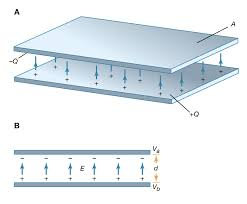
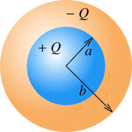
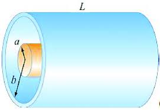

The capacitance of a capacitor depends strongly on its geometry. Different shapes and configurations result in different capacitance values, even with the same materials and voltage. Understanding these geometric relationships is crucial for capacitor design and analysis.
Shape: Different geometries have different capacitance formulas
Configuration: Series, parallel, or complex arrangements
Edge effects: Fringing fields affect capacitance
Parallel Plate Capacitor
Let's derive the capacitance formula for a parallel plate capacitor step by step. This will help us understand where the formula comes from and why it works.
Step 1: Understanding the Setup
We have two conducting plates of area A separated by a distance d. When we apply a voltage V, charge Q accumulates on each plate (positive on one, negative on the other).
Step 2: Electric Field Between Plates
From Gauss's law, we know that the electric field between two parallel plates with surface charge density σ is:
$$E = \frac{\sigma}{\epsilon_0}$$
Where σ = Q/A is the charge per unit area.
Step 3: Voltage and Electric Field Relationship
We also know that for a uniform electric field, the voltage is related to the field by:
$$V = Ed$$
This comes from the definition of electric potential: V = -∫E·dl, which for a uniform field becomes V = Ed.
Step 4: Combining the Relationships
Now we can combine these relationships:
Derivation:
From the electric field: \(E = \frac{\sigma}{\epsilon_0} = \frac{Q}{A\epsilon_0}\)
From the voltage: \(V = Ed = \frac{Qd}{A\epsilon_0}\)
Solving for Q: \(Q = \frac{A\epsilon_0 V}{d}\)
Using the definition of capacitance: \(C = \frac{Q}{V} = \frac{A\epsilon_0}{d}\)
Final Result
$$C = \frac{\epsilon_0 A}{d}$$
Where:
ε₀: Permittivity of free space = 8.85 × 10⁻¹² F/m
A: Area of each plate (m²)
d: Separation between plates (m)
This derivation shows why capacitance increases with area (more charge can be stored) and decreases with separation (stronger field for same voltage).

Parallel plate capacitor with area A and separation d.
Spherical Capacitor
A spherical capacitor consists of two concentric conducting spheres. Let's derive the capacitance formula step by step.
Step 1: Understanding the Setup
We have two concentric spheres with radii a (inner) and b (outer), where b > a. The inner sphere has charge +Q and the outer sphere has charge -Q.
Step 2: Electric Field Between Spheres
From Gauss's law, the electric field between the spheres (a < r < b) is:
$$E = \frac{Q}{4\pi\epsilon_0 r^2}$$
This is the same as the field due to a point charge, because the field outside a charged sphere is the same as if all the charge were concentrated at the center.
Step 3: Voltage Between Spheres
The voltage between the spheres is the integral of the electric field from a to b:
Voltage Calculation:
\(V = -\int_a^b E \cdot dr = -\int_a^b \frac{Q}{4\pi\epsilon_0 r^2} dr\)
b > a: Outer radius must be larger than inner radius
This derivation shows that the capacitance depends on the product of the radii divided by their difference. This is why spherical capacitors are efficient for high-voltage applications - they provide good capacitance in a compact, symmetric design.
Special Case: Isolated Sphere
For a single conducting sphere of radius R (with outer plate at infinity):
$$C = 4\pi\epsilon_0 R$$

Spherical capacitor with inner radius a and outer radius b.
Cylindrical Capacitor
A cylindrical capacitor consists of two concentric conducting cylinders. Let's derive the capacitance formula step by step.
Step 1: Understanding the Setup
We have two concentric cylinders with radii a (inner) and b (outer), and length L, where b > a. The inner cylinder has charge +Q and the outer cylinder has charge -Q.
Step 2: Electric Field Between Cylinders
From Gauss's law, the electric field between the cylinders (a < r < b) is:
$$E = \frac{\lambda}{2\pi\epsilon_0 r}$$
Where λ = Q/L is the charge per unit length. This is the field due to an infinite line of charge.
Step 3: Voltage Between Cylinders
The voltage between the cylinders is the integral of the electric field from a to b:
Voltage Calculation:
\(V = -\int_a^b E \cdot dr = -\int_a^b \frac{\lambda}{2\pi\epsilon_0 r} dr\)
b > a: Outer radius must be larger than inner radius
This derivation shows that the capacitance is proportional to the length and depends logarithmically on the ratio of the radii. This is why coaxial cables are efficient - they can be very long while maintaining good capacitance characteristics.

Cylindrical capacitor with inner radius a, outer radius b, and length L.
Worked Examples
Example 1: Spherical Capacitor
Problem: A spherical capacitor has inner radius 2.0 cm and outer radius 4.0 cm. What is its capacitance?
Solution Steps:
Given: a = 2.0 × 10⁻² m, b = 4.0 × 10⁻² m, ε₀ = 8.85 × 10⁻¹² F/m